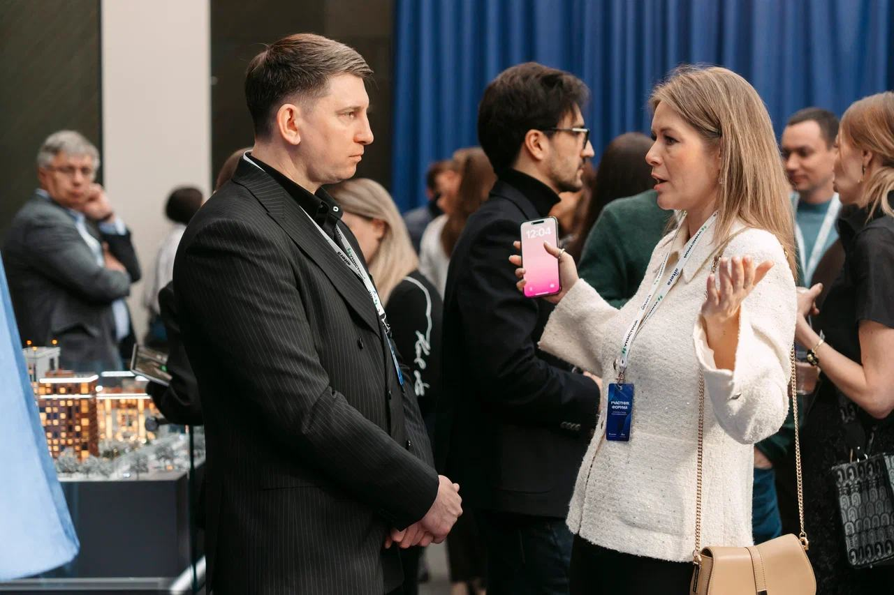
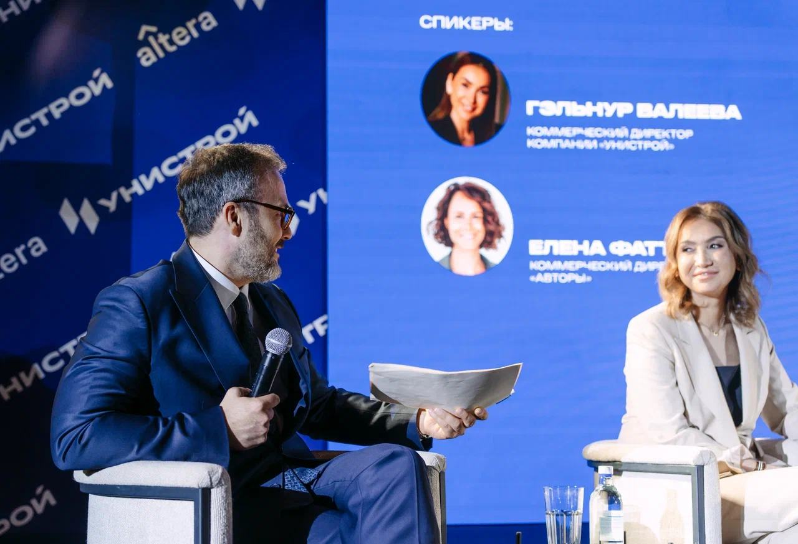
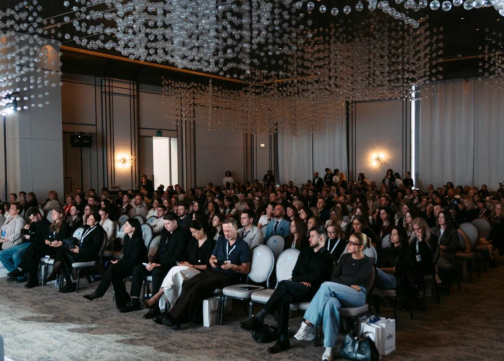

Стратегии
и трендырынка недвижимости
Казань
IT-парк имени Башира Рамеева
людей и идей
Рынок складывается из людей
Разные орбиты.
Одна встреча.
Альтера собирает агентства недвижимости, застройщиков, брокеров и партнёров, чтобы обсудить, куда движется рынок.
Форум 2027
Новые знакомства.
Общий взгляд на то, что дальше.
В центре обсуждения
Что дальше?
Стратегии и тренды
рынка недвижимости
Предварительные направления программы
Рынок и регионы +
Федеральная повестка и региональная практика. Содержание сессии уточняется.
Банки и ипотека +
Ипотечные программы и взаимодействие участников рынка. Содержание сессии уточняется.
Девелопмент и качество +
Взгляд застройщиков и профессионалов рынка. Содержание сессии уточняется.
Технологии и бизнес +
IT-технологии и инструменты для бизнеса. Содержание сессии уточняется.
Расписание и состав спикеров готовятся к анонсу.
Познакомиться с атмосферой форума ↘Первый форум Альтеры · 2026
Самое важное —
кто рядом.



Казань · 16–17 апреля 2027
Встретимся
в одной точке.
IT-парк имени Башира Рамеева
Партнёрство с форумом +
Форматы участия партнёров и условия готовятся к анонсу.